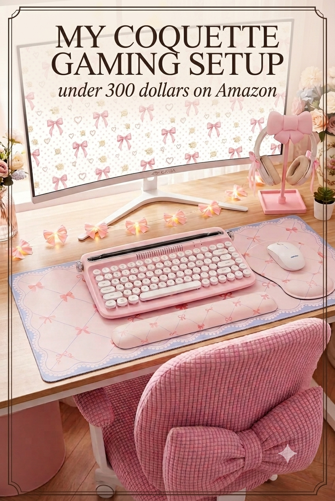
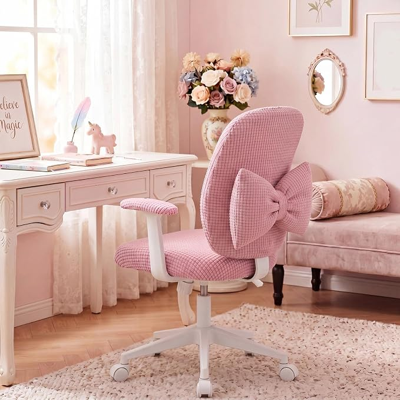
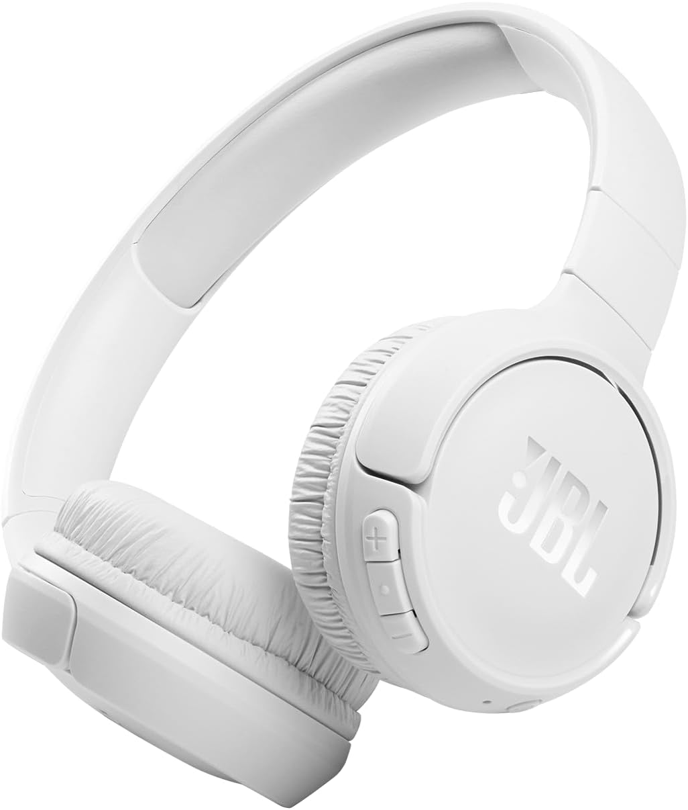
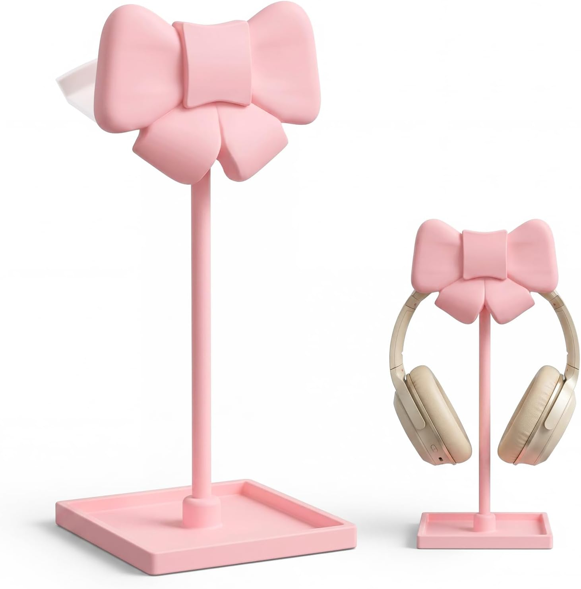
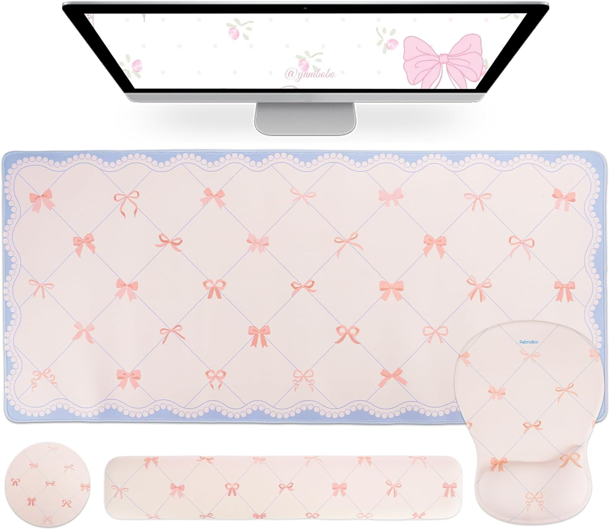
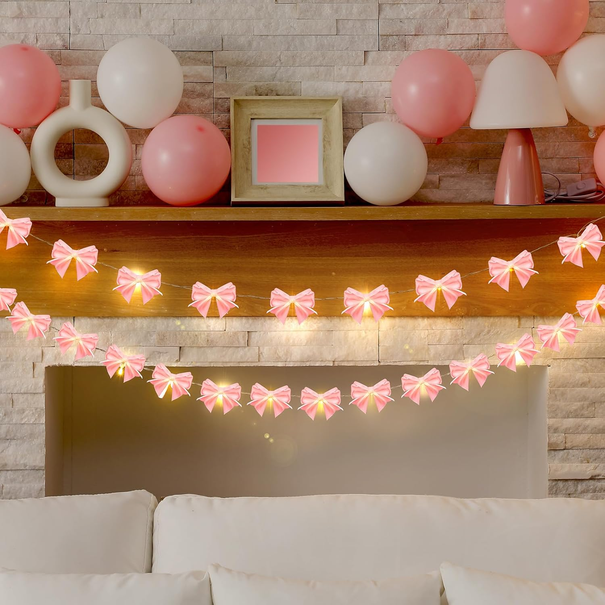
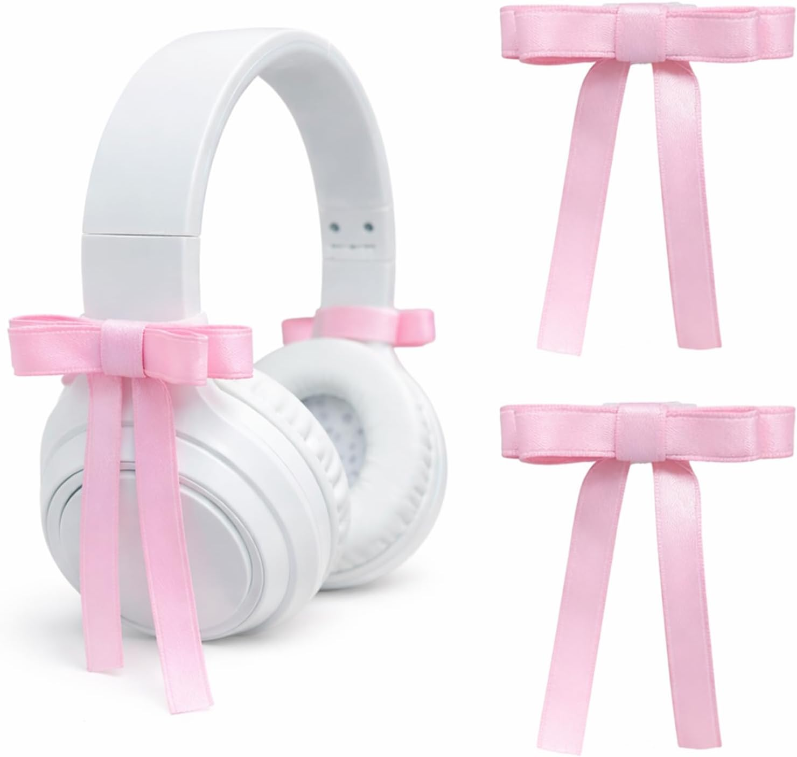

My coquette gaming setup — under $300, all on Amazon
Eight coquette-coded pieces — the bow keyboard, the bow stand, the bow lights, the bow everything — that add up to under $300 and look like they cost twice that.
Updated July 2026 · 8 pieces to shop

The coquette aesthetic is bows, softness and a colour palette that feels like pink and cream had a beautiful baby. This setup commits fully — a pink typewriter keyboard that looks like it belongs in a Parisian dressing room, a bow headphone stand with a built-in storage tray, bow fairy lights scattered across the desk and satin ribbon bows that clip straight onto your headphones. It looks like a Pinterest board. It's also completely under $300, every piece on Amazon, every piece linked below.
Everything in this setup
- 01ChairPink bow desk chair
- 02MonitorCRUA 27" curved white monitor
- 03KeyboardYUNZII ACTTO B303 typewriter keyboard — baby pink
- 04HeadphonesJBL Tune 510BT — white
- 05StandPink bow headphone stand with storage tray
- 06Desk mat4-in-1 desk mat set — bow tie grid, beige
- 07LightingPink bow string lights — 6.5ft
- 08AccessoryPink satin bow headphone accessories — 2-pack

Pink bow desk chair
A soft pink desk chair with a bow detail on the back — the piece that instantly identifies the whole setup as coquette before you notice anything else on the desk. Cushioned, comfortable and designed for long sessions. The bow isn't just decoration; it's the reason someone stops scrolling your Pinterest pin.
A proper gaming chair in pink costs $150-250 on its own and would push this setup well over $300. A well-chosen desk chair with the right aesthetic detail hits the same vibe for a fraction of the price — and honestly looks more coquette than a racing-style gaming chair ever could.
Check price on Amazon ↗
CRUA 27" curved white monitor
A 27-inch curved VA panel in white — 1920×1080, 100Hz, 1800R curve and three-sided frameless design. The white finish is what makes a coquette setup possible: most monitors are black, which fights the softness of everything else on the desk. This one leans into it.
The 120% sRGB coverage makes colours look warm and rich rather than cold and clinical. Flicker-free and blue-light filtered means long gaming or work sessions without eye fatigue. At this price point, white curved monitors are rare — most budget options only come in black.
Check price on Amazon ↗
YUNZII ACTTO B303 wireless typewriter keyboard — baby pink
A Bluetooth typewriter-style keyboard with round keycaps in baby pink — the kind of keyboard that makes people stop scrolling. Connects to up to three devices, has a built-in tablet and phone stand, and works across Windows, Mac and Android. The click is satisfying without being loud.
The retro typewriter look is nearly impossible to find in pink. Most aesthetic keyboards are flat and modern — the B303's round keycaps and curved body make it the only one that genuinely earns the coquette label. It's also truly wireless, not just USB with a cable option.
Check price on Amazon ↗
JBL Tune 510BT — white
On-ear Bluetooth headphones from JBL in white — 40 hours of battery life, a built-in microphone for calls, and a foldable design that stores flat. Compatible with Android and iOS. JBL's Pure Bass sound means music actually sounds good, not just acceptable for the price.
White headphones are surprisingly hard to find at budget prices — most cheap options only come in black. The 510BT hits the sweet spot: JBL audio quality at around $30, and the white finish is exactly the canvas you need for the bow accessories in item 08 below.
Check price on Amazon ↗
Pink bow headphone stand with storage tray
A curved pink headphone holder with a bow detail at the top and a built-in storage tray at the base for cables, lip balm, hair clips — whatever small things live on your desk and make it look cluttered. It's the piece that makes the whole setup look curated rather than assembled.
The storage tray is what separates this from every other headphone stand — most are just a hook. This one actually organises the small things that collect on desks, which means it earns its space even when you're not gaming. The bow detail is a bonus.
Check price on Amazon ↗
4-in-1 desk mat set — bow tie grid, beige
A large desk mat, keyboard wrist rest, mouse wrist rest and a cup coaster — all matching, all in beige with a subtle bow tie grid pattern. The wrist rests are ergonomically shaped, which means they actually help with long typing sessions. Non-slip base on the mat keeps everything anchored.
Most desk mats are sold alone. This set gives you the full coordinated look — mat, two wrist rests and a coaster — for the price most single mats charge. The bow tie grid is subtle enough to sit under the keyboard without competing with it for attention.
Check price on Amazon ↗
Pink bow string lights — 6.5ft
Battery-operated pink bow fairy lights, 6.5 feet long — small satin bows hanging like a garland across your desk, monitor stand or shelves. They add warmth and mood without being a proper light source. Drag them across the back of a desk, loop them around a monitor, or hang them above a shelf.
This is the detail that turns a desk into a vibe. Fairy lights are easy to find; bow fairy lights are almost impossible — and the difference is immediately visible in photos. Battery-operated means no extra cable running to a wall outlet to manage.
Check price on Amazon ↗
Pink satin bow headphone accessories — 2-pack
Two satin ribbon bows that attach directly to your headphones — designed to clip onto the headband and earcups, turning any plain white headset into a coquette accessory. Pink, soft and fully removable. Fits most over-ear and on-ear headphones including the JBL Tune 510BT above.
This is the cheapest way to make your headphones match the rest of the setup — under $10 and the effect is immediate. The contrast of a pink satin bow on white headphones is exactly the kind of small detail that makes a setup look intentional rather than random.
Check price on Amazon ↗